一、
达朗贝尔原理
把动力学问题通过惯性力转化为形式上的静力平衡问题，是分析力学从牛顿方程走向普遍原理的重要桥梁。
展开查看本页知识总图（放大版）
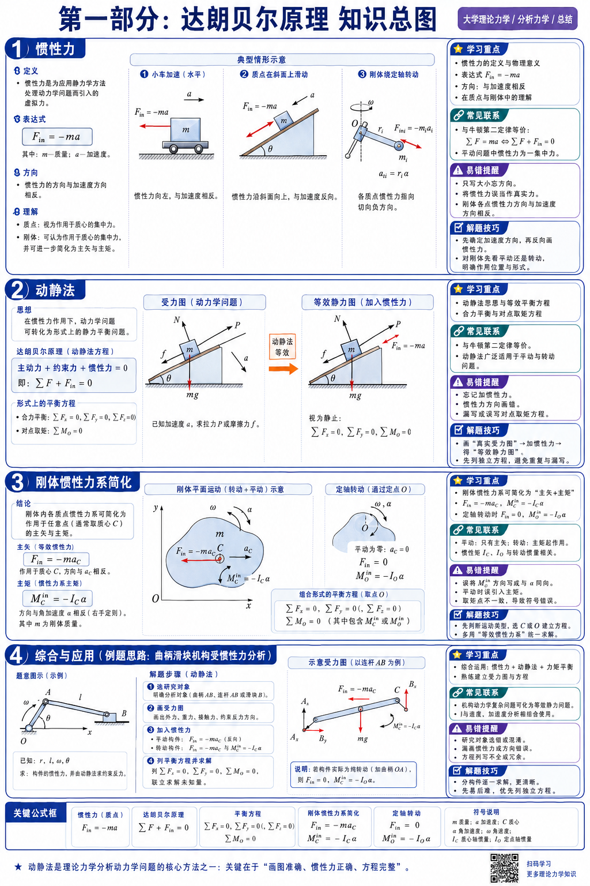
看图提示：先看公式主线与图示结构，再进入下方每个子模块。
本模块重点：先根据总图建立章节主线，再逐个学习子模块的核心定义、关联知识、易错点、解题技巧与课后小练。
本模块重点：在非惯性描述或动静法中引入的假想力，方向与加速度相反，大小为 ma。
① 内容核心
惯性力是达朗贝尔原理中引入的辅助量，目的是把“受力导致加速度”的动力学问题改写成“形式平衡”的问题。
它不是真实存在的相互作用力，而是为了在加速参考系或动静法中建立等效平衡而引入的假想力。
惯性力的大小等于质量乘加速度，方向与加速度相反。
F_in=-ma
② 知识点关联
- 连接达朗贝尔原理与动静法：补加惯性力后可按静力学平衡处理。
- 与牛顿第二定律对应：ΣF=ma 可改写为 ΣF+F_in=0。
- 刚体惯性力系简化中，质点惯性力推广为刚体的惯性主矢和惯性主矩。
③ 难点与易错点
- 不要把惯性力和牛顿第三定律中的反作用力混淆。
- 惯性力方向与加速度方向相反，不是与速度方向相反。
- 只在特定分析方法中引入，不是物体间真实接触或场作用。
④ 解题技巧
- 先由运动状态判断加速度方向。
- 在受力图之外补画惯性力，方向取 -a。
- 再按静力平衡形式列 ΣF=0 或 ΣM=0。
⑤ 课后小练
题目：质量 m 的滑块在小车上随车向右加速 a，若用随车参考系分析，惯性力方向如何？
参考答案：答案：惯性力大小为 ma，方向向左。
⑥ 本模块一句话总结
抓住一句话：惯性力是把动力学问题转化为静力学形式的工具。
学习建议：先看上方知识图解建立直观印象，再用本区完成“公式含义—知识关联—易错辨析—做题流程”的闭环。
模块配图
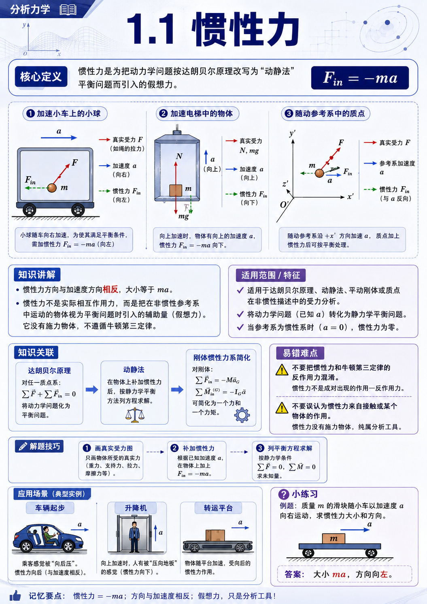
看图提示：先观察图中的公式主线、典型示意、知识关联和易错提醒，再回到左侧内容区完成理解。
本模块重点：给运动物体补加惯性力后，按静力平衡形式列方程求解。
① 内容核心
动静法的核心是“先动后静”：先根据运动情况确定加速度，再补加惯性力，把问题转化为等效平衡问题。
它适合求加速运动中的约束反力、支座反力、杆件内力等。
形式上像静力平衡，但物理本质仍然是动力学问题。
ΣF+F_in=0, \quad ΣM+M_in=0
② 知识点关联
- 以惯性力为基础，是达朗贝尔原理的直接应用。
- 与静力学平衡方程形式相同，但比静力学多了惯性力或惯性力偶。
- 在刚体系统中常与刚体惯性力系简化配合使用。
③ 难点与易错点
- 不能把真实受力图和等效平衡图混在一起。
- 惯性力必须与加速度对应，不能凭感觉添加。
- 若刚体有角加速度，除惯性力外还可能需要惯性力偶矩。
④ 解题技巧
- 画真实受力图。
- 由运动学关系求加速度或角加速度。
- 补加惯性力/惯性力偶。
- 按静力平衡方程求未知量。
⑤ 课后小练
题目：斜面上的滑块沿斜面向下加速 a，用动静法应补加什么力？
参考答案：答案：沿斜面向上补加惯性力 ma。
⑥ 本模块一句话总结
动静法的口诀：先求加速度，再加惯性力，最后列平衡。
学习建议：先看上方知识图解建立直观印象，再用本区完成“公式含义—知识关联—易错辨析—做题流程”的闭环。
模块配图
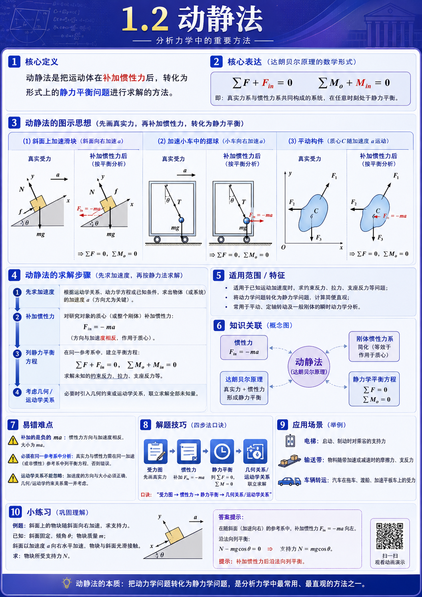
看图提示：先观察图中的公式主线、典型示意、知识关联和易错提醒，再回到左侧内容区完成理解。
本模块重点：将刚体上分布的惯性力系简化为一个主矢和一个主矩，便于刚体动力学建模。
① 内容核心
刚体由无数质点组成，各质点惯性力形成一个分布力系。
为了简化分析，可把分布惯性力系等效为作用于质心的惯性主矢和绕质心的惯性主矩。
这使刚体动力学可以用类似静力学的力系简化方法处理。
F_{in}=-m a_C,\quad M_C^{in}=-I_C\alpha
② 知识点关联
- 是惯性力从质点到刚体的推广。
- 与刚体平面运动方程对应：ΣF=ma_C，ΣM_C=I_Cα。
- 与动静法结合后，可将刚体动力学题转成等效平衡题。
③ 难点与易错点
- 平动刚体只有惯性主矢，转动刚体还要考虑惯性主矩。
- 取矩点不同时，惯性力偶矩表达会变化。
- 不能把 I_C、I_O 或不同轴的转动惯量混用。
④ 解题技巧
- 判断刚体运动形式：平动、定轴转动或平面运动。
- 求质心加速度 a_C 和角加速度 α。
- 写出惯性主矢和惯性主矩。
- 把它们加入等效受力图后列平衡方程。
⑤ 课后小练
题目：一圆盘绕固定中心轴角加速度为 α，转动惯量为 I_O，惯性力偶矩是多少？
参考答案：答案：M_O^{in}=-I_O α，方向与角加速度相反。
⑥ 本模块一句话总结
复杂分布惯性力不用逐点处理，等效为“一个力 + 一个力偶”即可。
学习建议：先看上方知识图解建立直观印象，再用本区完成“公式含义—知识关联—易错辨析—做题流程”的闭环。
模块配图
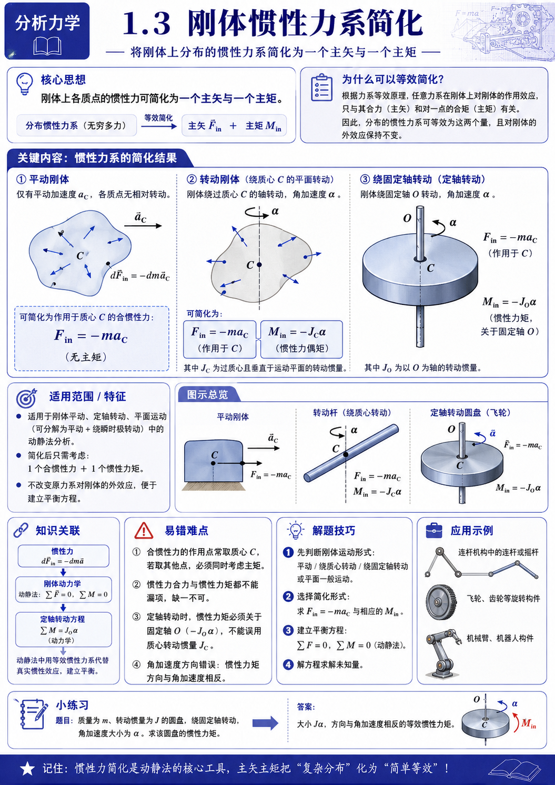
看图提示：先观察图中的公式主线、典型示意、知识关联和易错提醒，再回到左侧内容区完成理解。
二、
虚位移原理
用“允许的虚位移”与“虚功为零”处理受约束系统，核心优势是自动消去理想约束力。
展开查看本页知识总图（放大版）
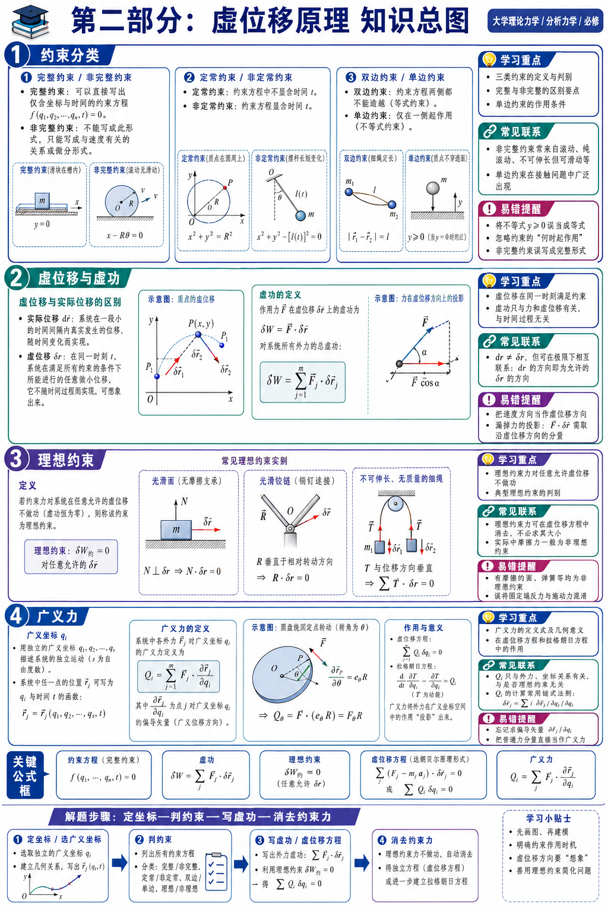
看图提示：先看公式主线与图示结构，再进入下方每个子模块。
本模块重点：先根据总图建立章节主线，再逐个学习子模块的核心定义、关联知识、易错点、解题技巧与课后小练。
本模块重点：按可积性、时间显含性、作用形式等方式识别约束，是建立广义坐标的前提。
① 内容核心
约束是限制系统运动自由度的条件。
完整约束可用坐标关系表示，非完整约束通常含速度微分关系且不能积分成单纯位置关系。
正确识别约束类型，决定了广义坐标选取和后续方程建立方式。
f(q,t)=0,\quad A(q,t)\dot q+b(q,t)=0
② 知识点关联
- 约束分类是虚位移原理、理想约束和拉格朗日方程的前置基础。
- 完整约束可减少独立广义坐标数。
- 非完整约束通常需要额外约束方程或乘子方法处理。
③ 难点与易错点
- 滚动约束不一定都是完整约束，要看是否可积。
- 非定常约束显含时间，虚位移与真实位移的区别更加重要。
- 单边约束只在接触或不等式满足时成立。
④ 解题技巧
- 先判断约束是否能写成位置方程。
- 再判断是否显含时间。
- 最后判断是双边等式约束还是单边不等式约束。
- 据此确定自由度数和独立广义坐标。
⑤ 课后小练
题目：小球被限制在半径 R 的光滑圆环上运动，属于什么约束？
参考答案：答案：完整、定常、双边约束。
⑥ 本模块一句话总结
约束识别正确，后面的虚位移、广义坐标和拉格朗日方程才不会跑偏。
学习建议：先看上方知识图解建立直观印象，再用本区完成“公式含义—知识关联—易错辨析—做题流程”的闭环。
模块配图
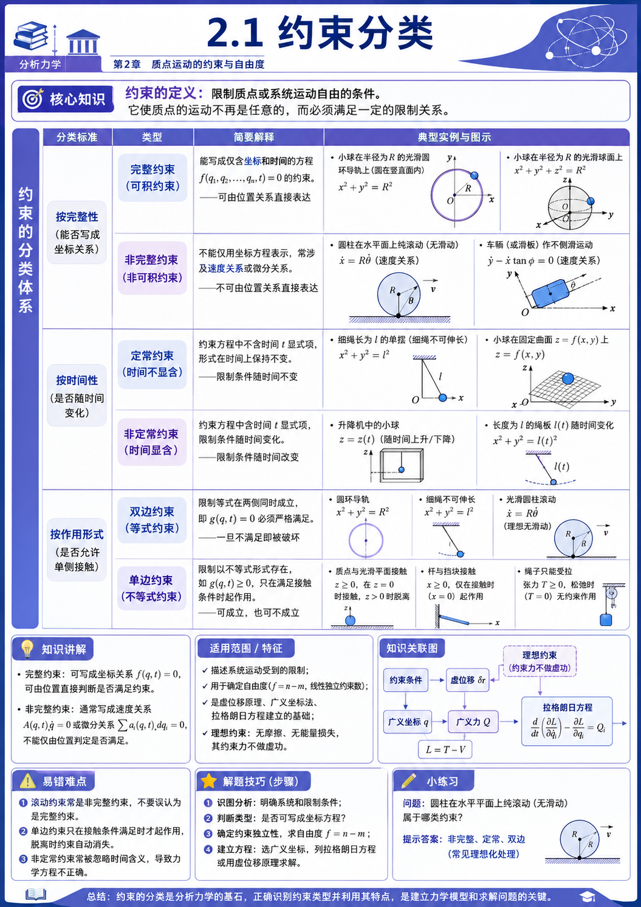
看图提示：先观察图中的公式主线、典型示意、知识关联和易错提醒，再回到左侧内容区完成理解。
本模块重点：虚位移是在某一瞬时满足约束的无限小可能位移，虚功是力在虚位移上的功。
① 内容核心
虚位移是在某一瞬时、满足约束条件的无限小可能位移。
虚功是力在虚位移上的功，反映力对允许运动趋势的作用。
虚位移不是实际位移，不包含时间演化过程。
\delta W=\sum_i F_i\cdot \delta r_i
② 知识点关联
- 虚位移原理用虚功为零判断平衡。
- 广义力就是虚功在广义坐标上的系数。
- 理想约束的约束反力虚功为零，因此可被自动消去。
③ 难点与易错点
- 不能把 δr 写成 dr 或 vdt。
- 虚位移必须满足约束，不是任意小位移。
- 虚功不是实际做功，它只用于瞬时的可能位移分析。
④ 解题技巧
- 先画出系统允许的虚位移方向。
- 计算各力在虚位移方向上的投影。
- 把所有虚功相加，并根据平衡或方程要求列式。
⑤ 课后小练
题目：光滑圆环上的小球，重力对切向虚位移是否可能做虚功？
参考答案：答案：可能做虚功；但法向约束反力不做虚功。
⑥ 本模块一句话总结
虚位移关注的是“此刻能怎么动”，虚功关注的是“力对这种可能运动的作用”。
学习建议：先看上方知识图解建立直观印象，再用本区完成“公式含义—知识关联—易错辨析—做题流程”的闭环。
模块配图
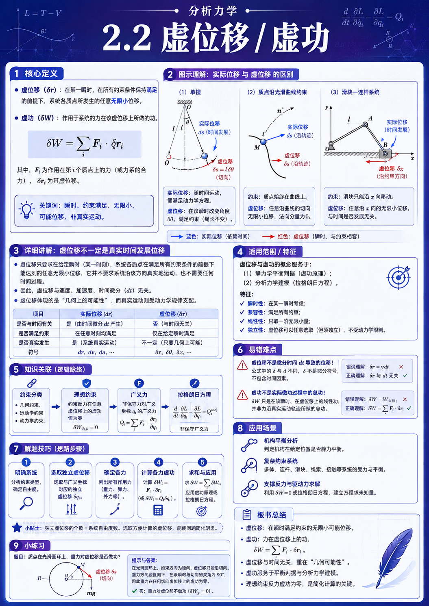
看图提示：先观察图中的公式主线、典型示意、知识关联和易错提醒，再回到左侧内容区完成理解。
本模块重点：若约束反力对任意允许虚位移不做功，则该约束为理想约束。
① 内容核心
理想约束是指约束反力在任意允许虚位移上所做虚功为零。
它使虚位移原理能绕开未知约束反力，直接建立主动力平衡或动力学方程。
常见理想约束包括光滑面、光滑铰链、不可伸长轻绳等理想模型。
\delta W_c=0
② 知识点关联
- 是虚位移原理中消去约束力的关键条件。
- 在拉格朗日方程推导中，理想约束保证约束反力不显式出现。
- 与广义力相关：非理想约束或摩擦力不能随意忽略。
③ 难点与易错点
- 有摩擦的接触通常不是理想约束。
- 不能把“不做虚功”误解成“约束反力不存在”。
- 必须检查约束反力方向是否与允许虚位移方向正交。
④ 解题技巧
- 先判断允许虚位移方向。
- 再判断约束反力方向。
- 若二者始终正交，则可认为约束理想。
- 建立虚功方程时可消去该约束力。
⑤ 课后小练
题目：光滑水平面上的支持力对水平虚位移是否做虚功？
参考答案：答案：不做虚功，因此该支持约束可视为理想约束。
⑥ 本模块一句话总结
理想约束的价值在于“有约束力，但它不进入虚功方程”。
学习建议：先看上方知识图解建立直观印象，再用本区完成“公式含义—知识关联—易错辨析—做题流程”的闭环。
模块配图
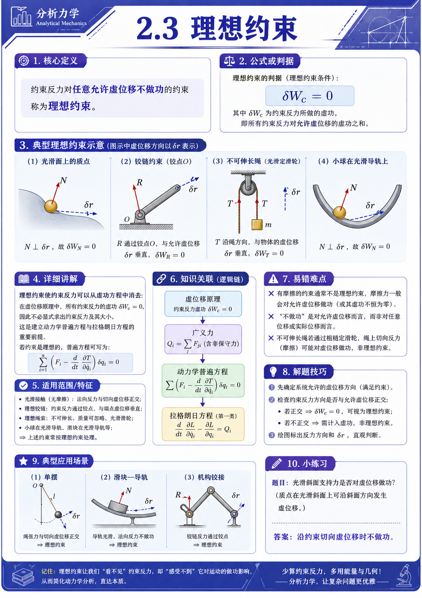
看图提示：先观察图中的公式主线、典型示意、知识关联和易错提醒，再回到左侧内容区完成理解。
本模块重点：广义力是外力在广义坐标方向上的等效力，是虚功在广义坐标下的系数。
① 内容核心
广义力是与广义坐标对应的等效力。
它不一定是普通意义上的力，也可能是力矩、等效驱动力或某种投影量。
只要它乘以对应广义虚位移后能表示虚功，就可称为广义力。
\delta W=\sum_j Q_j\delta q_j
② 知识点关联
- 从虚功表达自然引出广义力。
- 第二类拉格朗日方程右端的非保守项就是非保守广义力。
- 保守力对应的广义力可由势能求偏导得到。
③ 难点与易错点
- 广义力不能简单等同于外力大小。
- 不同广义坐标对应的广义力形式不同。
- 符号必须与广义坐标正方向保持一致。
④ 解题技巧
- 选定广义坐标 q_j。
- 写出质点位置对 q_j 的依赖。
- 计算外力虚功。
- 把虚功整理成 ΣQ_jδq_j，读出 Q_j。
⑤ 课后小练
题目：单摆以 θ 为广义坐标，重力对应的广义力是什么方向？
参考答案：答案：与 θ 增大方向相反，常写为 Q_θ=-mgl sinθ。
⑥ 本模块一句话总结
广义力就是把真实力投影到广义坐标方向上的“等效驱动力”。
学习建议：先看上方知识图解建立直观印象，再用本区完成“公式含义—知识关联—易错辨析—做题流程”的闭环。
模块配图
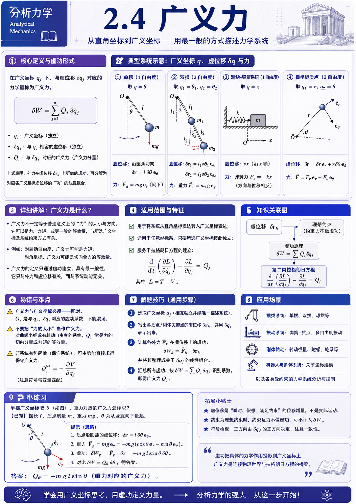
看图提示：先观察图中的公式主线、典型示意、知识关联和易错提醒，再回到左侧内容区完成理解。
三、
拉格朗日方程
以广义坐标和能量表达为核心，系统化处理多自由度、复杂约束与非直角坐标系统。
展开查看本页知识总图（放大版）
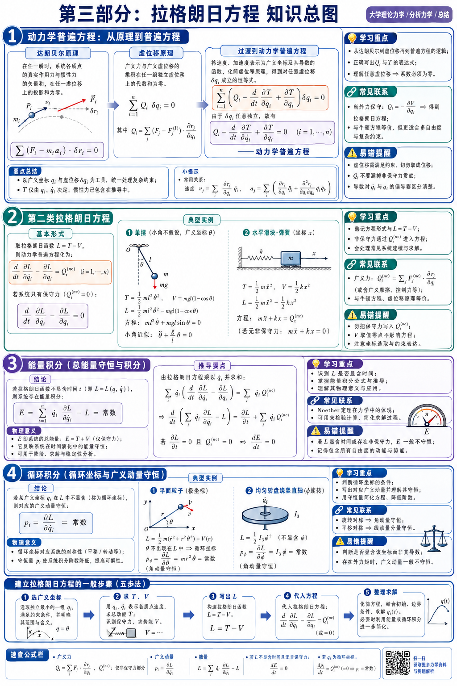
看图提示：先看公式主线与图示结构，再进入下方每个子模块。
本模块重点：先根据总图建立章节主线，再逐个学习子模块的核心定义、关联知识、易错点、解题技巧与课后小练。
本模块重点：由达朗贝尔原理和虚位移原理结合得到，是拉格朗日方程的出发点。
① 内容核心
动力学普遍方程把达朗贝尔原理和虚位移原理结合起来。
在理想约束条件下，约束反力虚功为零，方程只含主动力和惯性力。
它是从牛顿力学走向拉格朗日方程的中间桥梁。
\sum_i(F_i-m_i a_i)\cdot\delta r_i=0
② 知识点关联
- 由达朗贝尔原理引入惯性力。
- 由虚位移原理消去理想约束反力。
- 进一步用广义坐标表示后可推出第二类拉格朗日方程。
③ 难点与易错点
- 不要漏写惯性力虚功。
- 虚位移必须满足约束，否则约束反力虚功不能消去。
- 广义坐标不独立时，不能直接令每个 δq 系数为零。
④ 解题技巧
- 确认约束为理想约束。
- 写主动力虚功和惯性力虚功。
- 将位置虚位移用广义虚位移表示。
- 整理得到广义形式的动力学方程。
⑤ 课后小练
题目：为什么动力学普遍方程中通常不出现理想约束反力？
参考答案：答案：因为理想约束反力对任意允许虚位移的虚功为零。
⑥ 本模块一句话总结
动力学普遍方程的本质是：主动力虚功 + 惯性力虚功 = 0。
学习建议：先看上方知识图解建立直观印象，再用本区完成“公式含义—知识关联—易错辨析—做题流程”的闭环。
模块配图
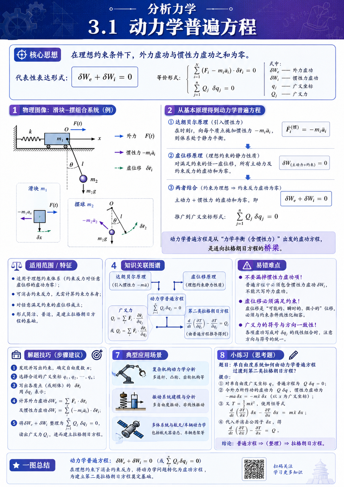
看图提示：先观察图中的公式主线、典型示意、知识关联和易错提醒，再回到左侧内容区完成理解。
3.2
第二类拉格朗日方程
导学总览对应子目录模块图文讲解
本模块重点：用最少独立广义坐标描述系统，建立标准化运动微分方程。
① 内容核心
第二类拉格朗日方程用独立广义坐标建立动力学方程。
对于保守系统，取 L=T-V，右端非保守广义力为零。
它特别适合复杂约束、多自由度、非直角坐标系统。
\frac{d}{dt}\left(\frac{\partial L}{\partial \dot q_j}\right)-\frac{\partial L}{\partial q_j}=Q_j^{(nc)}
② 知识点关联
- 由动力学普遍方程推导而来。
- 广义力进入右端，非保守作用可通过 Q_j^{(nc)} 表示。
- 能量积分和循环积分都建立在拉格朗日函数结构之上。
③ 难点与易错点
- 求偏导时 q 和 q˙ 要视为独立变量。
- T、V 必须用同一组广义坐标表达。
- 非保守力如阻尼、驱动力不能随意并入势能。
④ 解题技巧
- 选取最少独立广义坐标。
- 写出动能 T 和势能 V。
- 构造 L=T-V。
- 代入拉格朗日方程并整理运动方程。
⑤ 课后小练
题目：弹簧振子取 x 为广义坐标，T=1/2mx˙²，V=1/2kx²，拉格朗日方程结果是什么？
参考答案：答案：mx¨+kx=0。
⑥ 本模块一句话总结
拉格朗日方程的强大之处在于：用能量和广义坐标替代繁琐的约束力分析。
学习建议：先看上方知识图解建立直观印象，再用本区完成“公式含义—知识关联—易错辨析—做题流程”的闭环。
模块配图
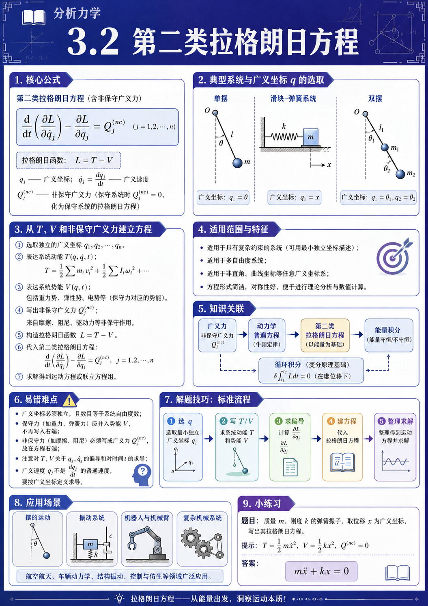
看图提示：先观察图中的公式主线、典型示意、知识关联和易错提醒，再回到左侧内容区完成理解。
本模块重点：当拉格朗日函数不显含时间时，可得到能量型守恒量。
① 内容核心
能量积分是拉格朗日函数不显含时间时产生的守恒量。
在许多自然机械系统中，它对应总机械能守恒。
它能减少求解微分方程的难度，并帮助判断运动范围。
H=\sum_j\dot q_j\frac{\partial L}{\partial \dot q_j}-L=常数
② 知识点关联
- 与第二类拉格朗日方程相连，是由时间平移对称性产生的守恒量。
- 与机械能守恒对应，但并非任何情况下 H 都等于 T+V。
- 与循环积分类似，都是对称性导致的第一积分。
③ 难点与易错点
- L 显含时间时通常不存在简单能量积分。
- 存在非保守力或外部驱动时不能强行守恒。
- H 是否等于机械能要看坐标和势能是否满足条件。
④ 解题技巧
- 检查 L 是否显含时间。
- 计算广义动量 ∂L/∂q˙_j。
- 构造 H 并判断是否为常数。
- 利用 H=常数分析速度、转折点或运动范围。
⑤ 课后小练
题目：无阻尼弹簧振子是否存在能量积分？
参考答案：答案：存在，E=1/2mx˙²+1/2kx² 为常数。
⑥ 本模块一句话总结
能量积分来自时间不显含，常用于把二阶方程降为一阶关系。
学习建议：先看上方知识图解建立直观印象，再用本区完成“公式含义—知识关联—易错辨析—做题流程”的闭环。
模块配图
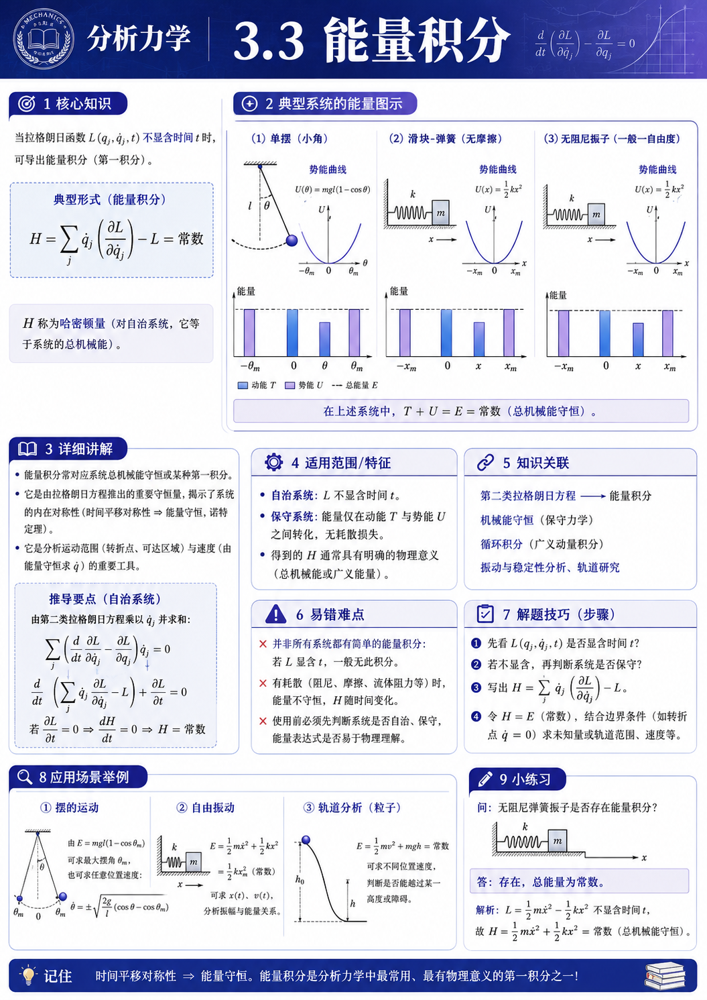
看图提示：先观察图中的公式主线、典型示意、知识关联和易错提醒，再回到左侧内容区完成理解。
本模块重点：若某广义坐标不出现在 L 中，则其对应广义动量守恒。
① 内容核心
若某个广义坐标不出现在拉格朗日函数中，它就是循环坐标。
循环坐标对应的广义动量守恒，这就是循环积分。
它反映了系统在该坐标方向上的对称性。
\frac{\partial L}{\partial q_k}=0\Rightarrow p_k=\frac{\partial L}{\partial \dot q_k}=常数
② 知识点关联
- 与第二类拉格朗日方程直接相连。
- 与 Noether 思想一致：对称性对应守恒量。
- 常见守恒量包括线动量、角动量和某些广义动量。
③ 难点与易错点
- 循环坐标是 L 不含该坐标，不是该坐标数值不变。
- 若 L 含 q_k 但不明显，需要化简后再判断。
- 存在非保守广义力时，对应动量不一定守恒。
④ 解题技巧
- 写出 L(q,q˙,t)。
- 逐项检查是否出现某个 q_k。
- 若不出现，则写 p_k=∂L/∂q˙_k=常数。
- 用守恒量降低方程阶数。
⑤ 课后小练
题目：中心力场中极角 θ 常是循环坐标，对应什么守恒？
参考答案：答案：角动量守恒。
⑥ 本模块一句话总结
循环积分的记忆点：不显含坐标，就守恒对应广义动量。
学习建议：先看上方知识图解建立直观印象，再用本区完成“公式含义—知识关联—易错辨析—做题流程”的闭环。
模块配图
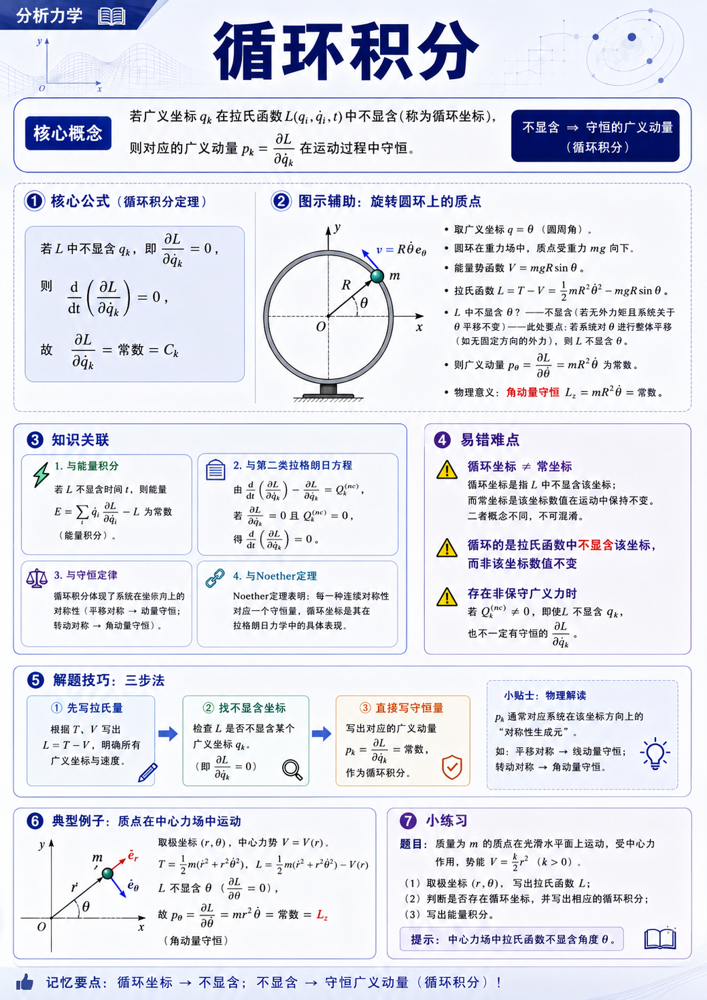
看图提示：先观察图中的公式主线、典型示意、知识关联和易错提醒，再回到左侧内容区完成理解。
四、
振动
研究系统在平衡位置附近的往复运动，重点包括自由振动、受迫振动、模态与微幅振荡。
展开查看本页知识总图（放大版）
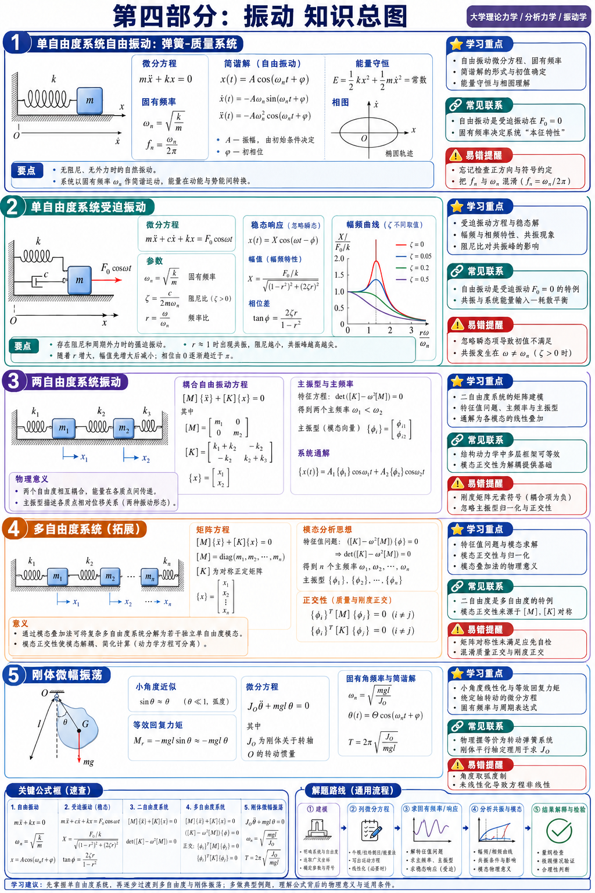
看图提示：先看公式主线与图示结构，再进入下方每个子模块。
本模块重点：先根据总图建立章节主线，再逐个学习子模块的核心定义、关联知识、易错点、解题技巧与课后小练。
4.1
单自由度系统自由振动
导学总览对应子目录模块图文讲解
本模块重点：无外力作用下，系统离开平衡位置后进行简谐运动。
① 内容核心
单自由度自由振动是最基本的振动模型。
系统在无外力作用下偏离平衡位置后，由恢复力驱动做简谐运动。
固有频率只由系统质量和刚度决定，与初始位移大小无关。
m\ddot x+kx=0
② 知识点关联
- 是受迫振动、多自由度振动和刚体微幅振荡的基础模型。
- 与能量守恒相连：动能与势能周期转化。
- 与线性微分方程理论直接相关。
③ 难点与易错点
- 振幅由初始条件决定，不决定固有频率。
- 周期 T 和频率 f、角频率 ω_n 不要混淆。
- 自由振动不含外力项，不能把 F(t) 写入方程。
④ 解题技巧
- 建立位移坐标 x。
- 由弹簧力写出方程 mx¨+kx=0。
- 求固有频率 ω_n=√(k/m)。
- 用初始条件确定振幅和相位。
⑤ 课后小练
题目：m=2kg，k=800N/m，求固有角频率。
参考答案：答案：ω_n=√(800/2)=20 rad/s。
⑥ 本模块一句话总结
自由振动的核心：无外力、固有频率、简谐响应。
学习建议：先看上方知识图解建立直观印象，再用本区完成“公式含义—知识关联—易错辨析—做题流程”的闭环。
模块配图
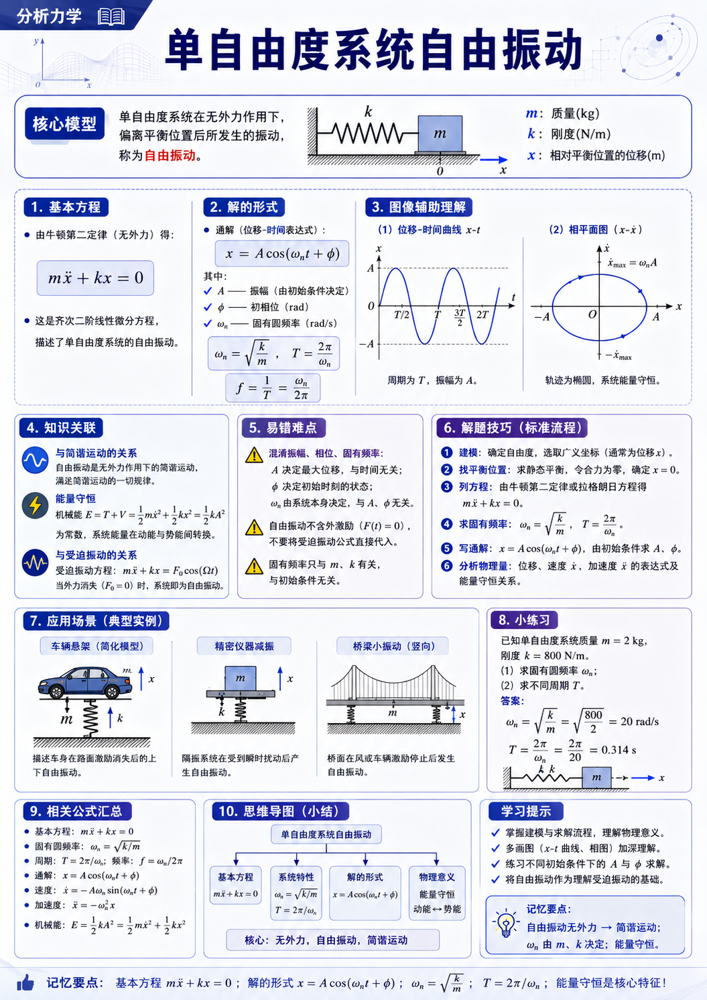
看图提示：先观察图中的公式主线、典型示意、知识关联和易错提醒，再回到左侧内容区完成理解。
4.2
单自由度系统受迫振动
导学总览对应子目录模块图文讲解
本模块重点：系统在周期外力作用下产生瞬态响应和稳态响应，共振是其核心现象。
① 内容核心
受迫振动研究系统在外部周期激励下的响应。
总响应通常由瞬态响应和稳态响应组成，长期后稳态响应占主导。
当激励频率接近固有频率时，可能出现共振。
m\ddot x+c\dot x+kx=F_0\cos\omega t
② 知识点关联
- 以自由振动为基础，加入外力与阻尼。
- 与工程减振、隔振和共振控制密切相关。
- 多自由度系统受迫振动可看作多个模态受迫响应叠加。
③ 难点与易错点
- 受迫振动的稳态频率等于外力频率，不一定等于固有频率。
- 阻尼会降低共振峰并改变相位。
- 共振并不只看频率，还要看阻尼与激励方向。
④ 解题技巧
- 写标准方程。
- 求系统参数 ω_n、阻尼比 ζ、频率比 r。
- 分析幅频特性和相位差。
- 判断是否接近共振并给出减振措施。
⑤ 课后小练
题目：若激励频率接近系统固有频率，且阻尼很小，会发生什么？
参考答案：答案：振幅显著增大，出现共振现象。
⑥ 本模块一句话总结
受迫振动的主线：外力频率、阻尼和共振峰。
学习建议：先看上方知识图解建立直观印象，再用本区完成“公式含义—知识关联—易错辨析—做题流程”的闭环。
模块配图
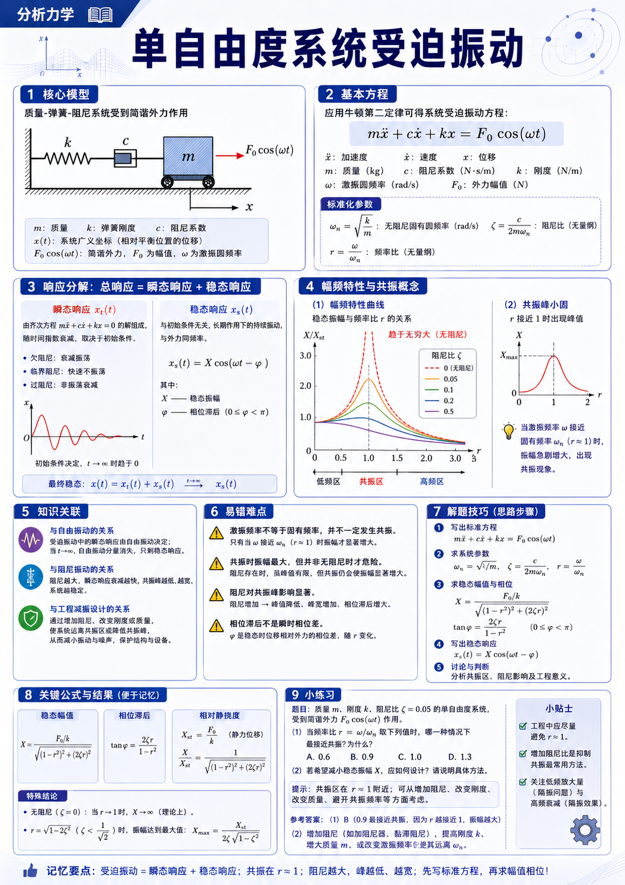
看图提示：先观察图中的公式主线、典型示意、知识关联和易错提醒，再回到左侧内容区完成理解。
本模块重点：两个独立广义坐标构成耦合振动系统，核心是求固有频率和主振型。
① 内容核心
两自由度系统有两个独立坐标，通常表现为耦合振动。
求解重点是固有频率和主振型。
一般响应可看成多个主振型的线性组合。
M\ddot x+Kx=0
② 知识点关联
- 是多自由度振动的最小完整模型。
- 与矩阵特征值问题相连。
- 与模态分析思想直接对应。
③ 难点与易错点
- 两个质量块不一定就是两个自由度，关键看独立坐标数。
- 耦合刚度项符号容易写错。
- 主振型是比例关系，不是唯一数值。
④ 解题技巧
- 选独立坐标 x1、x2。
- 建立质量矩阵 M 和刚度矩阵 K。
- 解 det(K-ω²M)=0。
- 求主振型并进行模态叠加。
⑤ 课后小练
题目：两自由度系统通常有几个固有频率？
参考答案：答案：通常有两个固有频率，对应两个主振型。
⑥ 本模块一句话总结
两自由度系统的核心：矩阵方程、固有频率、主振型。
学习建议：先看上方知识图解建立直观印象，再用本区完成“公式含义—知识关联—易错辨析—做题流程”的闭环。
模块配图
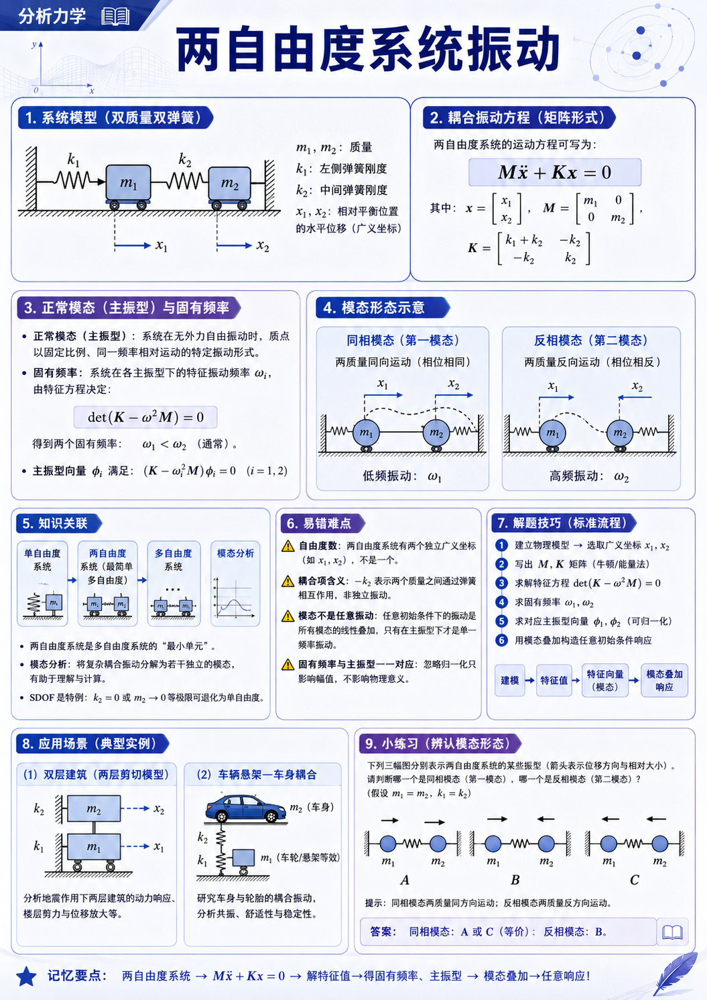
看图提示：先观察图中的公式主线、典型示意、知识关联和易错提醒，再回到左侧内容区完成理解。
4.4
多自由度系统（拓展）
导学总览对应子目录模块图文讲解
本模块重点：用矩阵方程描述多个自由度系统，模态分析是核心方法。
① 内容核心
多自由度系统用矩阵形式统一表示复杂结构的振动。
其核心思想是将复杂耦合问题通过模态分析转化为若干近似独立的单自由度问题。
工程上常用于建筑、机械、航空结构等振动分析。
M\ddot x+C\dot x+Kx=F(t)
② 知识点关联
- 是两自由度系统的推广。
- 与有限元方法、结构动力学和模态试验密切相关。
- 无阻尼自由振动可通过特征值问题得到模态。
③ 难点与易错点
- 自由度数由独立坐标决定，不等于构件数量。
- 矩阵 M、C、K 的维度必须一致。
- 边界条件改变会显著改变固有频率和模态。
④ 解题技巧
- 确定自由度并建立坐标向量。
- 写出质量、阻尼、刚度矩阵。
- 求固有频率和模态向量。
- 用模态叠加分析响应。
⑤ 课后小练
题目：一个 n 自由度无阻尼系统通常有多少个固有频率？
参考答案：答案：通常有 n 个固有频率。
⑥ 本模块一句话总结
多自由度振动的本质是：把复杂系统写成矩阵，再用模态理解运动。
学习建议：先看上方知识图解建立直观印象，再用本区完成“公式含义—知识关联—易错辨析—做题流程”的闭环。
模块配图
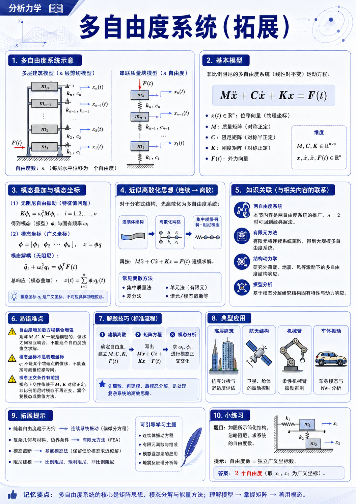
看图提示：先观察图中的公式主线、典型示意、知识关联和易错提醒，再回到左侧内容区完成理解。
本模块重点：刚体在稳定平衡位置附近小角度摆动时，可线性化为简谐振动。
① 内容核心
刚体微幅振荡是刚体在稳定平衡位置附近的小角度振动。
当角度很小时，sinθ≈θ，非线性转动方程可线性化为简谐振动方程。
典型对象包括物理摆、刚体杆、构件绕固定点摆动等。
I_O\ddot\theta+mgl\theta=0
② 知识点关联
- 与单自由度自由振动形式一致，只是平动变量 x 换成转角 θ。
- 与刚体转动动力学相连：ΣM_O=I_Oα。
- 与小振动理论相连，是非线性系统线性化的典型例子。
③ 难点与易错点
- 小角度近似有适用范围，角度过大误差明显。
- I_O 必须是绕转轴 O 的转动惯量。
- l 是转轴到重心的距离，不一定是杆长。
④ 解题技巧
- 确定转轴和重心位置。
- 写重力对转轴的力矩。
- 小角度线性化 sinθ≈θ。
- 求固有频率与周期。
⑤ 课后小练
题目：均匀细杆长 L，绕端点微幅摆动，重心距端点多少？
参考答案：答案：l=L/2。
⑥ 本模块一句话总结
刚体微幅振荡就是“转动版”的单自由度简谐振动。
学习建议：先看上方知识图解建立直观印象，再用本区完成“公式含义—知识关联—易错辨析—做题流程”的闭环。
模块配图
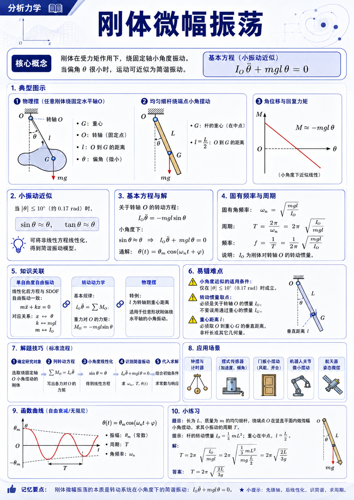
看图提示：先观察图中的公式主线、典型示意、知识关联和易错提醒，再回到左侧内容区完成理解。
五、
碰撞
研究极短时间内速度突变的过程，动量守恒、恢复系数和能量损失是核心。
展开查看本页知识总图（放大版）
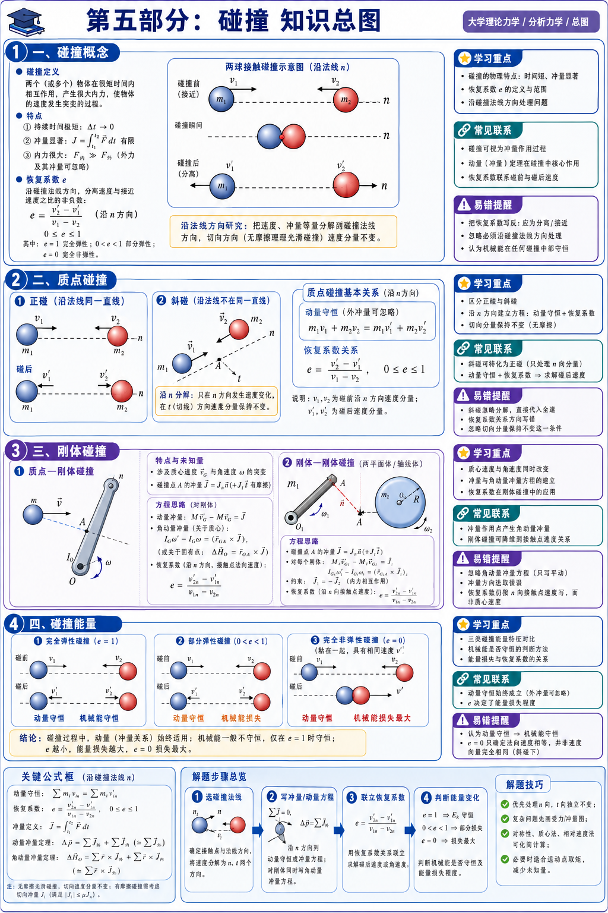
看图提示：先看公式主线与图示结构，再进入下方每个子模块。
本模块重点：先根据总图建立章节主线，再逐个学习子模块的核心定义、关联知识、易错点、解题技巧与课后小练。
本模块重点：碰撞是短时间、大内力、速度突变的过程，动量常守恒而机械能不一定守恒。
① 内容核心
碰撞是极短时间内发生的强烈相互作用过程。
由于时间很短，外力冲量常可忽略，系统动量常近似守恒。
但机械能是否守恒取决于碰撞类型和恢复系数。
J=\int F\,dt
② 知识点关联
- 与动量定理直接相关。
- 恢复系数连接碰撞前后法向相对速度。
- 碰撞能量分析进一步判断机械能损失。
③ 难点与易错点
- 碰撞中动量守恒不等于机械能守恒。
- 恢复系数只沿碰撞法线方向定义。
- 碰撞方向和速度正负号必须先规定清楚。
④ 解题技巧
- 确定碰撞方向或法线方向。
- 判断外力冲量是否可忽略。
- 列动量方程。
- 根据需要加入恢复系数方程。
⑤ 课后小练
题目：完全非弹性碰撞中，两物体碰后有什么速度特征？
参考答案：答案：碰后粘在一起或具有相同速度。
⑥ 本模块一句话总结
碰撞题第一反应：时间短、冲量大、动量常守恒、能量要另判。
学习建议：先看上方知识图解建立直观印象，再用本区完成“公式含义—知识关联—易错辨析—做题流程”的闭环。
模块配图
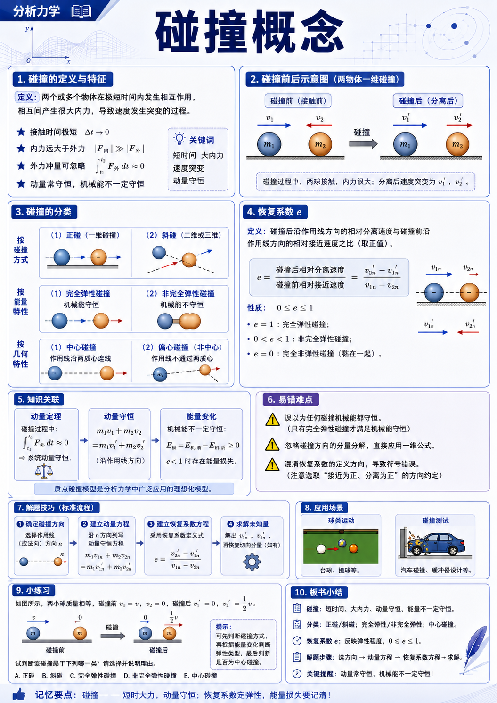
看图提示：先观察图中的公式主线、典型示意、知识关联和易错提醒，再回到左侧内容区完成理解。
本模块重点：质点碰撞常沿碰撞法线方向列动量守恒与恢复系数方程。
① 内容核心
质点碰撞通常沿碰撞法线方向分析。
正碰可直接按一维动量守恒与恢复系数列方程。
斜碰需要把速度分解到法向和切向方向。
m_1u_1+m_2u_2=m_1v_1+m_2v_2
② 知识点关联
- 是碰撞概念的基本模型。
- 与恢复系数方程配合可求碰后速度。
- 刚体碰撞在质点碰撞基础上进一步考虑转动。
③ 难点与易错点
- 速度方向统一前不要代公式。
- 斜碰不能直接套一维正碰公式。
- 切向分量在无摩擦时通常不变，不用恢复系数。
④ 解题技巧
- 选碰撞法线为正方向。
- 写动量守恒方程。
- 写恢复系数方程。
- 联立求碰后速度。
⑤ 课后小练
题目：两质点一维碰撞已知 m1,m2,u1,u2,e，通常需要几条方程求 v1,v2？
参考答案：答案：两条方程：动量守恒和恢复系数方程。
⑥ 本模块一句话总结
质点碰撞的关键是方向统一和恢复系数方程。
学习建议：先看上方知识图解建立直观印象，再用本区完成“公式含义—知识关联—易错辨析—做题流程”的闭环。
模块配图
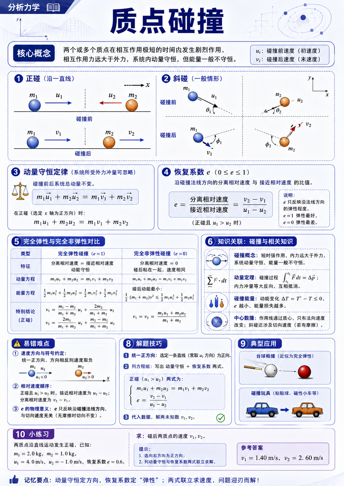
看图提示：先观察图中的公式主线、典型示意、知识关联和易错提醒，再回到左侧内容区完成理解。
本模块重点：刚体碰撞中线速度和角速度同时突变，常用动量矩定理处理。
① 内容核心
刚体碰撞中不仅质心速度可能突变，角速度也可能突变。
冲量对参考点的矩会改变刚体角动量。
适当选取取矩点可以消去未知碰撞冲量或约束冲量。
H_O^+-H_O^- = J_M
② 知识点关联
- 与动量矩定理紧密相关。
- 与质点碰撞相比，多了角速度和转动惯量。
- 与碰撞能量部分相连，碰撞后机械能通常减少。
③ 难点与易错点
- 不能只用质心动量守恒解决所有刚体碰撞。
- 参考点选错会导致未知冲量过多。
- 恢复系数通常只用于接触点法向相对速度。
④ 解题技巧
- 画碰撞瞬间示意图。
- 选合适参考点取矩。
- 列冲量—动量矩关系。
- 必要时加入恢复系数与接触点速度关系。
⑤ 课后小练
题目：杆绕固定轴摆动撞墙，求碰后角速度时优先考虑哪个定理？
参考答案：答案：优先对固定轴列动量矩定理。
⑥ 本模块一句话总结
刚体碰撞题的核心是“冲量 + 角动量 + 接触点速度”。
学习建议：先看上方知识图解建立直观印象，再用本区完成“公式含义—知识关联—易错辨析—做题流程”的闭环。
模块配图
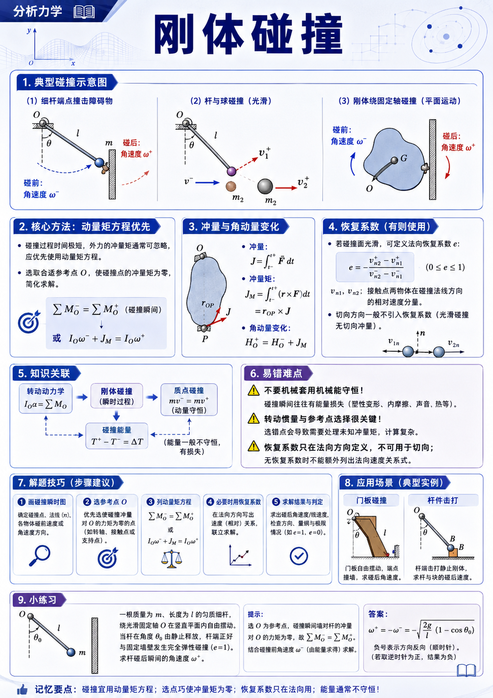
看图提示：先观察图中的公式主线、典型示意、知识关联和易错提醒，再回到左侧内容区完成理解。
本模块重点：碰撞中动量常守恒，但机械能通常损失，恢复系数越小能量损失越大。
① 内容核心
碰撞过程中动量常可守恒，但机械能一般不守恒。
损失的机械能转化为内能、声能、形变能等。
恢复系数越小，碰撞越不弹性，能量损失越大。
\Delta E=E_{before}-E_{after}\ge 0
② 知识点关联
- 与恢复系数直接相关。
- 与质点碰撞和刚体碰撞中的碰后速度求解配合使用。
- 与动能定理不同，碰撞阶段通常更适合用冲量和动量分析。
③ 难点与易错点
- 能量损失不是能量消失，而是转化为其他形式。
- e=1 时机械能守恒，但 e<1 时通常有损失。
- 动量守恒与机械能守恒条件不同，不要混淆。
④ 解题技巧
- 先用动量和恢复系数求碰后速度。
- 计算碰撞前后动能。
- 比较能量变化并判断损失大小。
- 结合 e 判断碰撞类型。
⑤ 课后小练
题目：完全非弹性碰撞的机械能损失通常是最大还是最小？
参考答案：答案：通常最大。
⑥ 本模块一句话总结
碰撞能量的判断：动量常守恒，机械能看恢复系数和碰撞类型。
学习建议：先看上方知识图解建立直观印象，再用本区完成“公式含义—知识关联—易错辨析—做题流程”的闭环。
模块配图
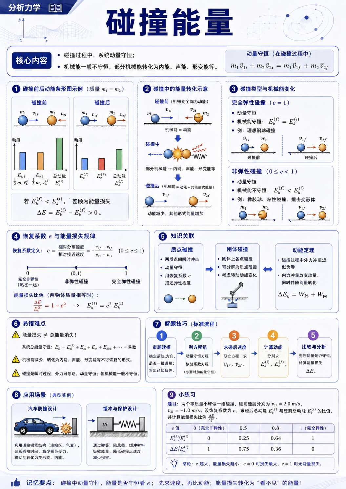
看图提示：先观察图中的公式主线、典型示意、知识关联和易错提醒，再回到左侧内容区完成理解。